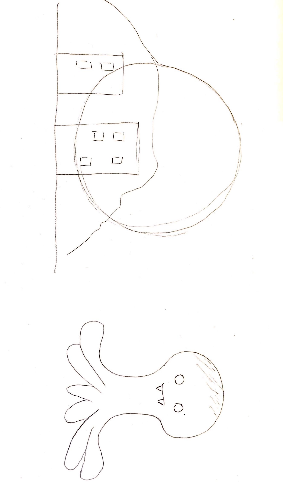
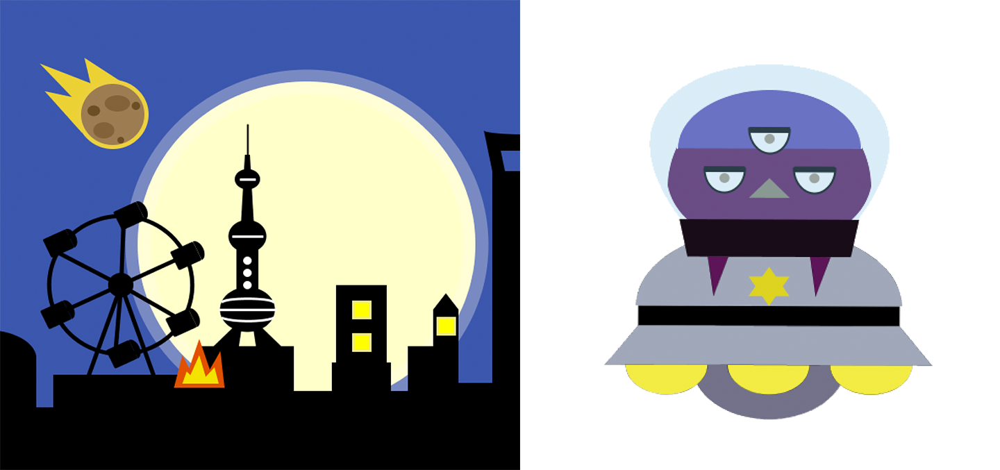
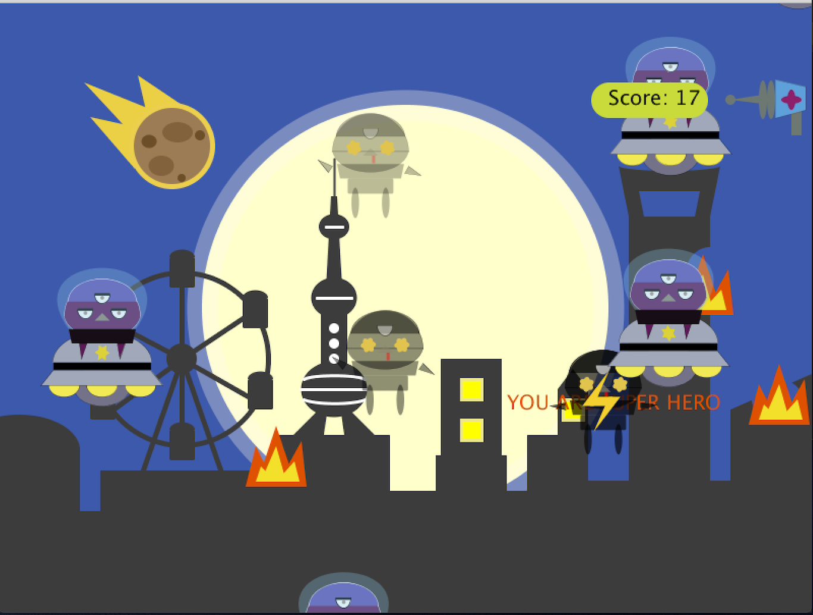

12:00
Since the project should be designed by ourselves, my first research is to look for graphic works online to get my inspiration. After a series of comparison and filtrating, a moon graph become my blueprint. The second research was after the draft sketching and all the research is in processing.org website. Since some special graphics and curves were not taught in class, and they were necessary for my design, I did those second researches.
Only the moon blueprint is too simple to construct a completed background so I added some elements of my hometown. After that, I got a sudden idea because of the movie ‘Prometheus’, and decided to produce the scenes of alien invasion of earth. Therefore, the character was determined.
Since the unfamiliarity with Processing, my coding process is not that smooth. When I met the trouble I didn’t know how to solve, I would look for the answers from processing websites or online tutorial videos. And then, I would change and test them in my own code. I think it’s a good method to work out most of problems, not only in Processing.
The final result is to mix the work of background and alien together, and then add some special effect as my own bonus. (Please use prepros open the html, I embed a processing program into my page, but it seems not work if just click index.html)
That was my first experience with Processing. Before that, I only learned a little bit Python, and the experience of Python didn’t give me too much help on that project. Many ideas in my mind were prevented from a variety of technical problems. Therefore, I try my best to achieve the effect what I could do that time. During the process, I also met several problems caused by unfamiliarity with Processing. Since that, this experience became my motivation to learn more languages and computing skills later.